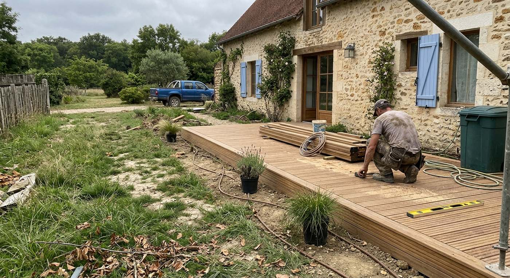
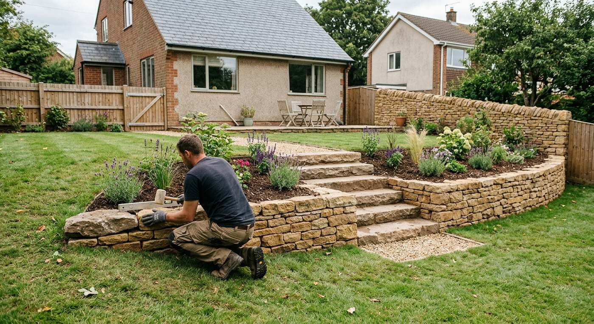
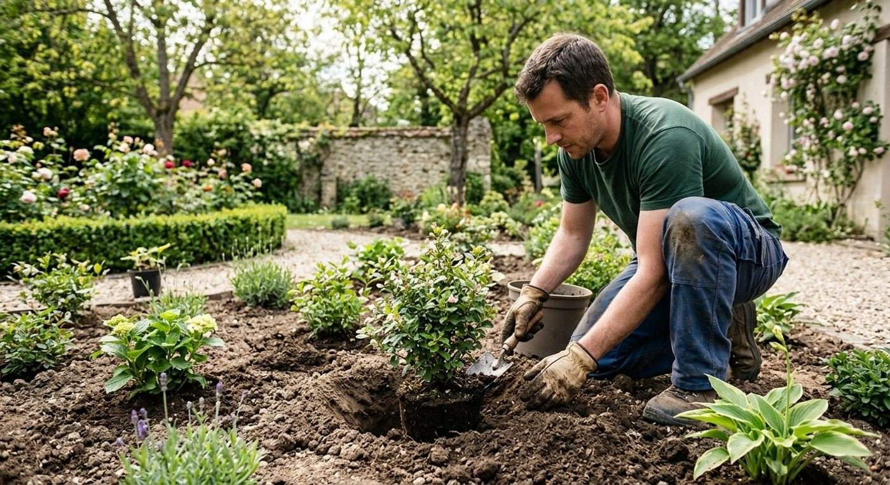
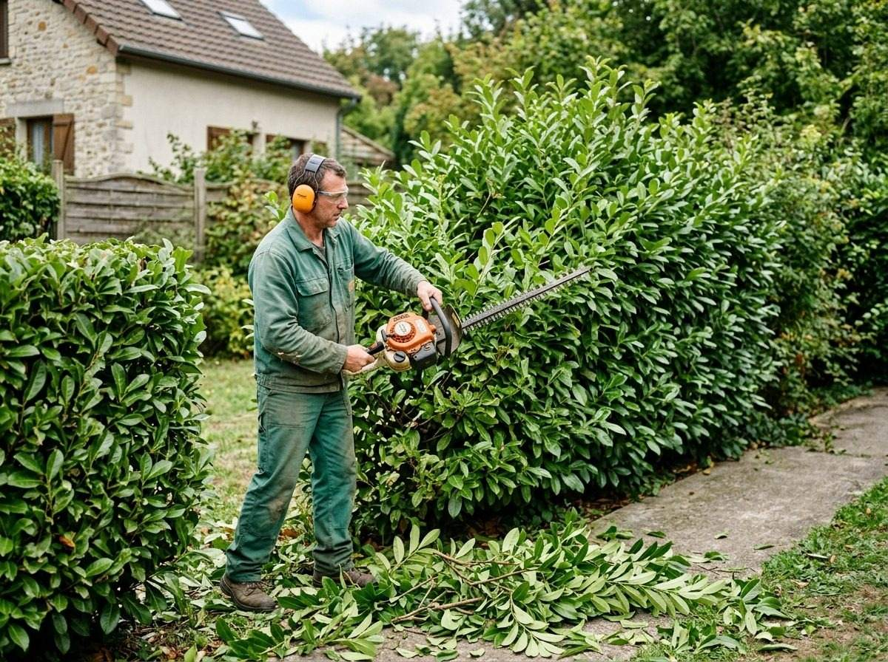
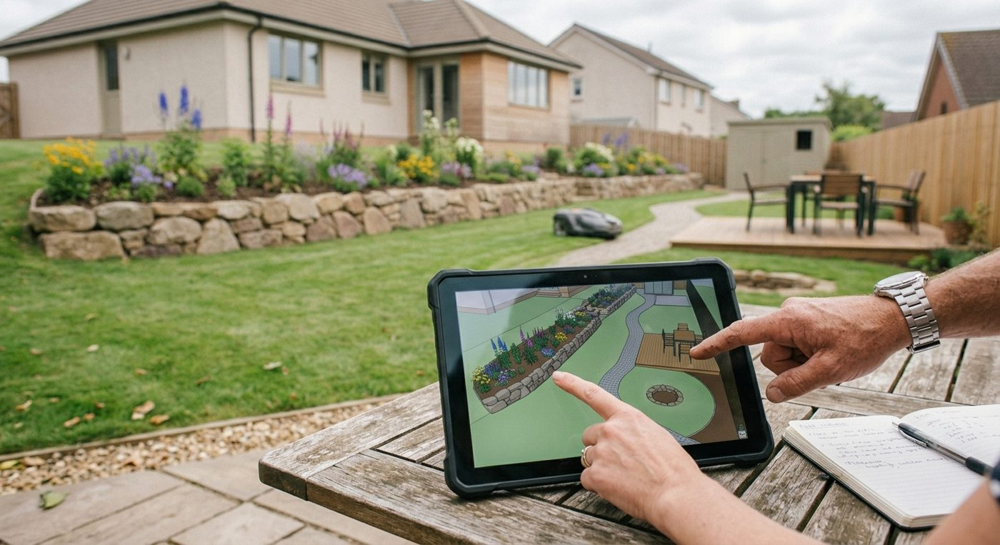
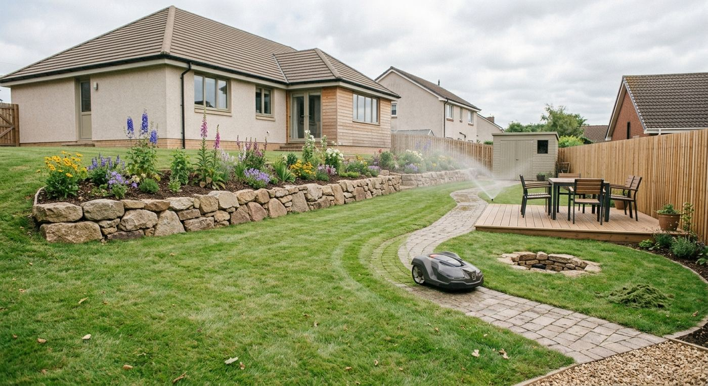

01
Terrasses & allées
Terrasses en bois, allées dallées ou pavées : des cheminements durables pour profiter du jardin en toute saison.
Création, aménagement et entretien de jardins autour de Rosay. Un interlocuteur unique, Julien Authier, de l’idée au dernier coup de sécateur.

Du terrassement aux plantations, des allées aux haies : une seule équipe pour créer puis faire vivre votre extérieur.

01
Terrasses en bois, allées dallées ou pavées : des cheminements durables pour profiter du jardin en toute saison.

02
Murets, marches et soutènements en pierre pour structurer les niveaux et donner du caractère au terrain.

03
Choix des végétaux, préparation du sol et plantation : des massifs pensés pour s’épanouir au fil des saisons.
De la conception à l’entretien courant, pour que le résultat dure.

04
Taille de haies, tonte, désherbage : un entretien régulier pour un jardin net toute l’année.

05
Un projet adapté à votre terrain, à vos usages et à votre budget, défini avec vous avant le premier coup de pelle.

06
Engazonnement et solutions d’entretien de pelouse pour un tapis vert facile à vivre.
Chaque projet suit le même fil : comprendre, dessiner, réaliser, entretenir.
Nous venons voir le terrain, vos envies et vos contraintes.
Un plan clair, des végétaux choisis, un devis détaillé.
Chantier soigné, propre, mené dans les délais convenus.
Nous restons disponibles pour faire vivre votre jardin.

Authier Parcs et Jardins est une entreprise d’aménagement paysager basée à Rosay, dans les Yvelines.
Décrivez-nous votre besoin : nous vous rappelons pour fixer une visite et établir un devis.